iOS Widgets
Widgets for TradingView’s iOS app: a redesign of the Home Screen widgets for iPhone and iPad, and then new Lock Screen widgets for iOS 16, which got featured on the App Store.
Home Screen
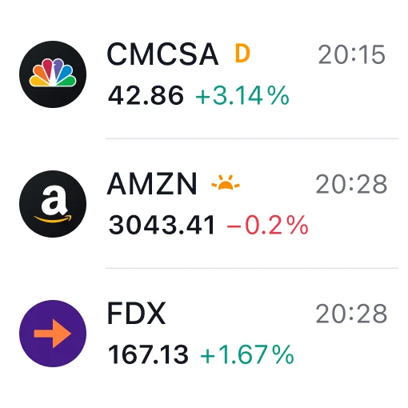
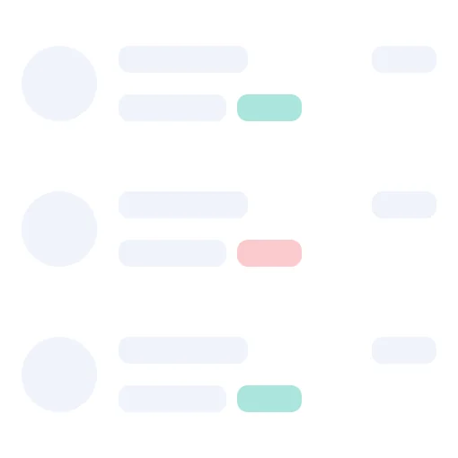
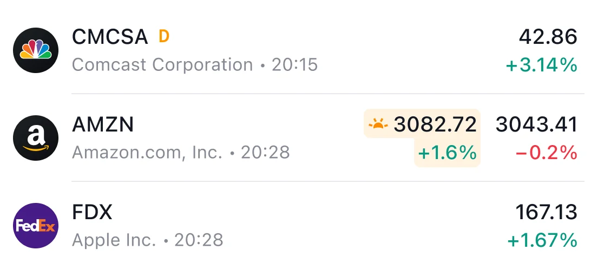
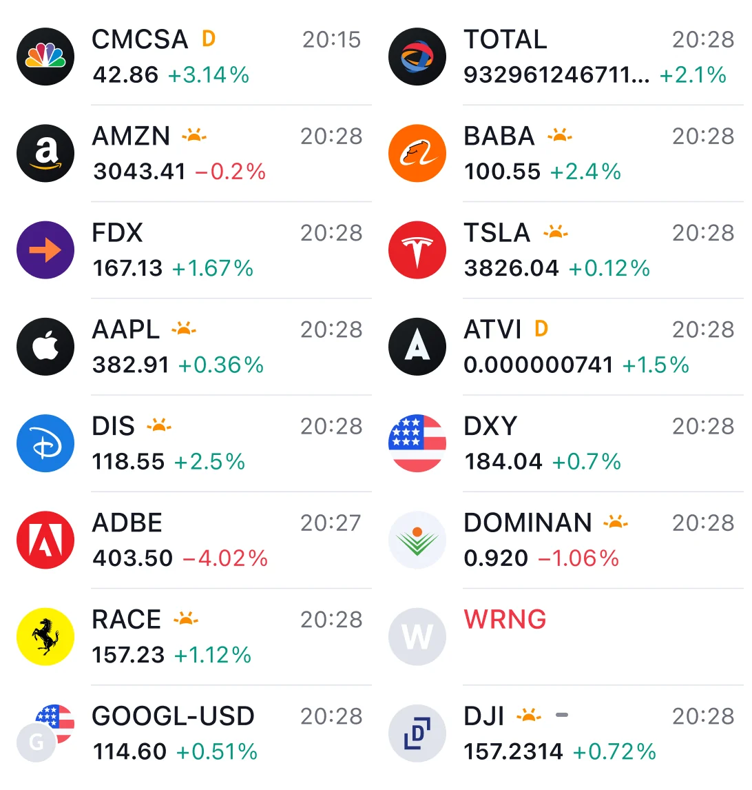
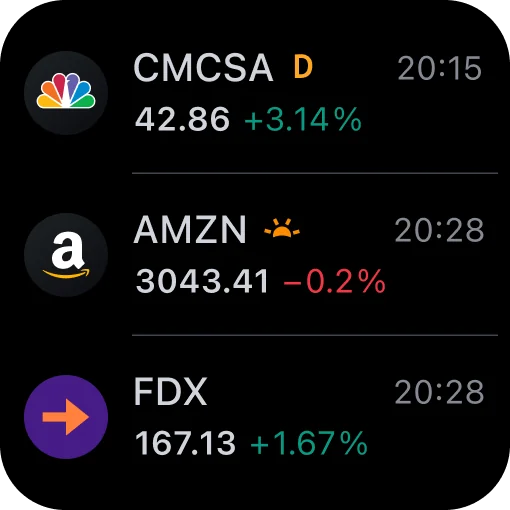
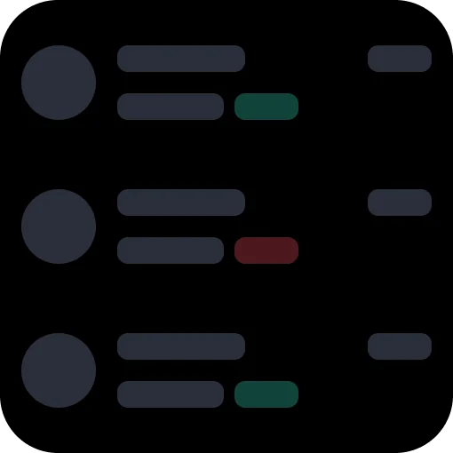
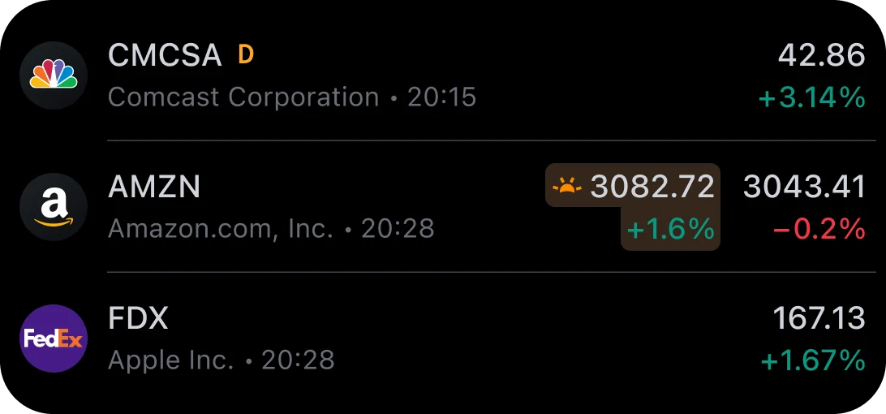
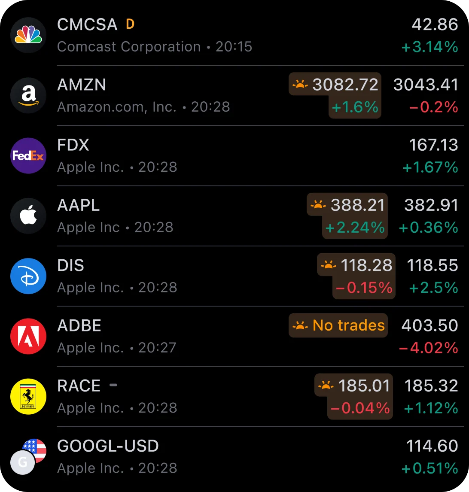
Task
This was one of my first tasks after I joined the company. The Home Screen widgets had aged, and the task was to redesign them for iPhone and iPad.
Competitive analysis
Before designing anything, I ran a competitive analysis of the widgets in other trading and finance apps. Back then we benchmarked against competitors. Now they benchmark against us.
Component
Every widget is built from one component, the data cell: logo, ticker, price, change and the time of the last update. I rebuilt it and went through every corner case: tickers and company names that don’t fit, prices with a dozen digits, and a symbol that failed to load.
The cell comes in two layouts. The compact one fits more symbols on the screen. The detailed one adds the company name and, outside trading hours, the pre-market or after-hours price next to the main one.
- Long price. The price is cut from the end, so the change always stays visible.
- Long ticker. Tickers like GOOGL-USD fit next to the update time.
- Error. If a symbol can’t be loaded, the cell shows it in red instead of an empty row.
Sizes
I checked every decision against Apple’s guidelines for widgets and designed each size: small, medium and large, in light and dark mode, with a placeholder for the moment before the data arrives.
Widget sizes also depend on the phone, and the difference turned out to be bigger than it looks: the large widget on an iPhone 13 Pro Max is almost a fifth taller than on an iPhone SE. So the layout adapts: on a big iPhone the widget shows more rows, on a small one it shrinks without cutting a row in half.
iPad
Users asked for a widget that uses the big iPad screen. I proposed an extra large widget with much more data, in the same two layouts: detailed, with company names and extended-hours prices, and compact, with three columns and up to 24 symbols at once. It shipped with the rest.
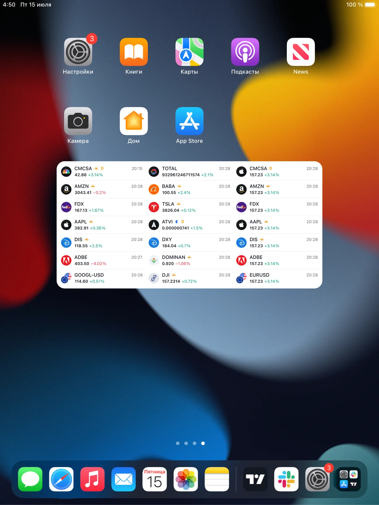
Lock Screen
While I was still working on the Home Screen widgets, Apple released the first beta of iOS 16 with a new place for widgets: the Lock Screen. I suggested we build them too, right away.
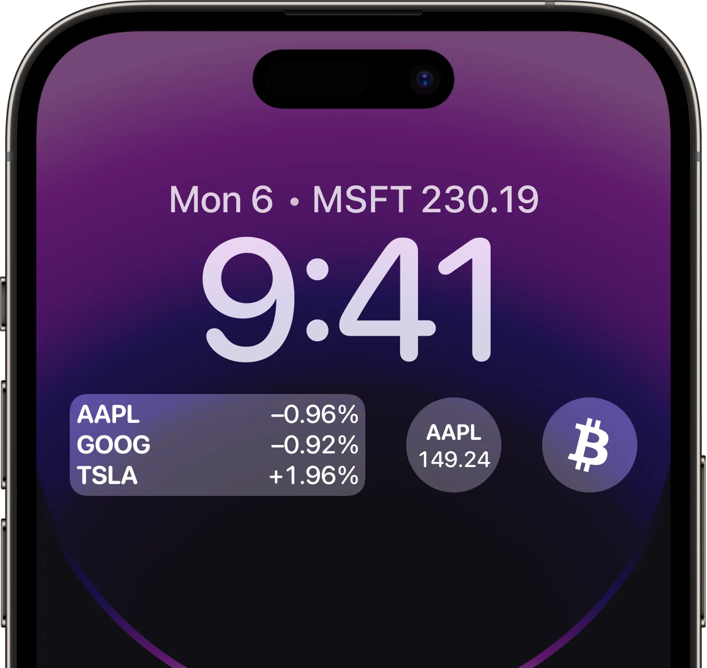
Prototype in Xcode
In the first days of the beta I installed it on my phone and built a prototype in Xcode beta. There were no design resources from Apple yet, and nobody knew how these widgets actually worked: what sizes they had, or how the system would tint the text and blend the images.
I handed the prototype to the developers, so they could explore what was technically possible, and went back to Figma to refine the widgets.
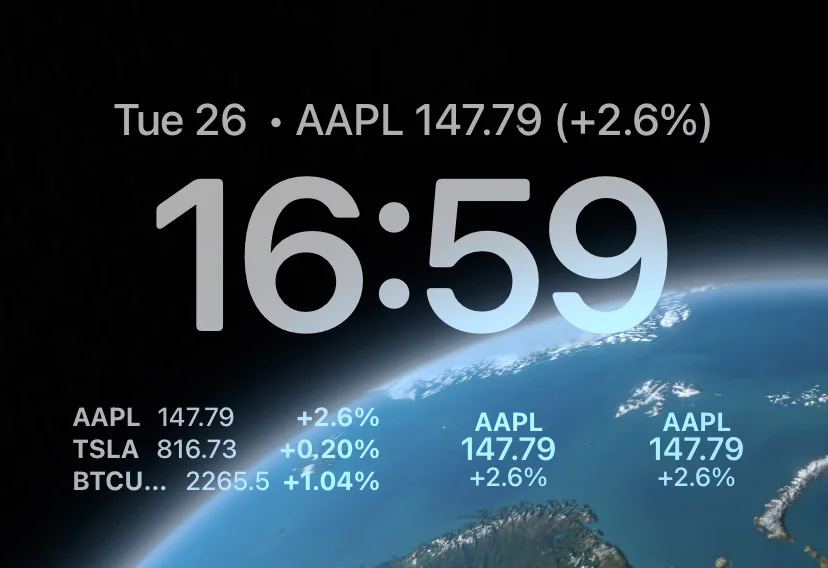
Constraints
No templates
A beta without design resources from Apple. Sizes and rendering had to be checked on a real phone.
Monochrome only
The system draws the widget in a single tint. No colours at all: no red and green for price moves, no coloured logos.
Every pixel counts
The widgets are tiny and fit very little data: a ticker and a price. Every pixel was a fight.
No custom layout
Nothing outside the circle or rectangle, no animation. A tap just opens the app.
States
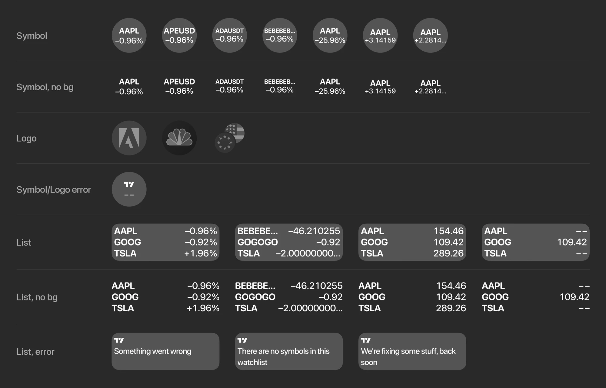
- Tickers up to five letters stay whole. Longer ones are cut to four letters and an ellipsis.
- Digits are cut last. Ticker and price stay at least 4 pt apart.
- Circular widgets shrink the text first, then cut it.
- Errors and empty lists show a message with the app logo.
- Loading skeletons are automatic: each text line becomes a bar.
Release
Both sets of widgets shipped. The Lock Screen widgets came out almost together with the public release of iOS 16, and TradingView became one of the first fintech apps with Lock Screen widgets. The community met the new widgets warmly.
For the launch I prepared an App Store in-app event, “Meet the Lock Screen Widget”. The event got featured on the App Store.
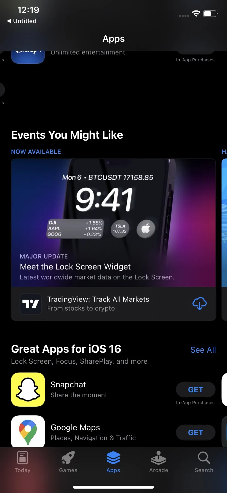